Anotações de Aula 2 NP1
2.1 Grupos até 2025-03-27
2.1.1 Turma Campus Chácara Santo Antônio
| ID | Nome do Aluno | RA | Turma | GRUPO | NP1 – Trabalho | NP1 – Prática |
|---|---|---|---|---|---|---|
| 9 | CARLOS EDUARDO SILVA BATISTA | R448DE-8 | DS1P40 | GRUPO CONNECTI | ||
| 95 | RAMON BRIAN GONÇALVES DOS SANT | R85236-9 | DS1Q40 | GRUPO CONNECTI | ||
| 99 | RICHARD RODRIGUES MEDEIROS | H75556-5 | DS1Q40 | GRUPO CONNECTI | ||
| 89 | PEDRO EDUARDO PAIVA MEIRELES | R8699H-4 | DS1Q40 | GRUPO CONNECTI | ||
| 1 | ANDERSON RAULINO DA SILVA | F3620J-8 | DS1P40 | GRUPO CORETECH | ||
| 18 | FREDSON SILVA DOS SANTOS | R427FB-0 | DS1P40 | GRUPO CORETECH | ||
| 92 | PEDRO LEONILDO DA SILVA TEIXEI | R65838-4 | DS1Q40 | GRUPO CORETECH | ||
| 12 | CAUAN NUNES LOPES | H6771G-9 | DS1P40 | GRUPO CWE | ||
| 15 | EDER RODRIGUES DE ALMEIDA | R8459C-7 | DS1P40 | GRUPO CWE | ||
| 78 | MATHEUS KAUÃ VERAS SANTORES | R8461B-7 | DS1Q40 | GRUPO CWE | ||
| 112 | WILLIAM DA SILVA CARVALHO | H5963E-7 | DS1Q40 | GRUPO CWE | ||
| 10 | CARLOS EDUARDO SILVA SANTANA | F362EF-1 | DS1P40 | GRUPO CYBER SEED | ||
| 25 | GUSTAVO RODRIGUES OGNIBENE MIG | R692AG-0 | DS1P40 | GRUPO CYBER SEED | ||
| 39 | LINCOLN GUILHERME SANT ANNA BA | H7501D-3 | DS1P40 | GRUPO CYBER SEED | ||
| 106 | VICTOR FERREIRA DA S RIBEIRO | R851DI-0 | DS1Q40 | GRUPO CYBER SEED | ||
| 50 | MATHEUS BRIGANTI DE OLIVEIRA | H74FGI-8 | DS1P40 | GRUPO DEV SQUAD | ||
| 82 | MICHEL FARIAS DA SILVA | R6607C-2 | DS1Q40 | GRUPO DEV SQUAD | ||
| 105 | THIAGO FERREIRA DIAS | R218BC-1 | DS1Q40 | GRUPO DEV SQUAD | ||
| 28 | HENRIQUE BASTOS LAET | R671IG-1 | DS1P40 | GRUPO EDUSOFT SOLUTIONS | ||
| 116 | CAIO CESAR BALBINO DA SILVA | R536FA-6 | TI1P40 | GRUPO GJLC ENTERPRISE | ||
| 120 | GABRIEL ROQUE DOS SANTOS | R6607G-5 | TI1P40 | GRUPO GJLC ENTERPRISE | ||
| 34 | JOÃO VICTOR RODRIGUES SILVA | R83238-4 | DS1P40 | GRUPO GJLC ENTERPRISE | ||
| 69 | LUCAS FERNANDES FIGUEIREDO | H76688-5 | DS1Q40 | GRUPO GJLC ENTERPRISE | ||
| 60 | EDUARDO DE SOUSA PEREIRA | H759CH-8 | DS1Q40 | GRUPO HELIUS HOME | ||
| 77 | MATHEUS DA SILVA BRITO | R839DA-4 | DS1Q40 | GRUPO HELIUS HOME | ||
| 83 | MIGUEL DOS SANTOS MENDES SITOM | R540EA-6 | DS1Q40 | GRUPO HELIUS HOME | ||
| 3 | ARTUR HENRIQUE DE OLIVEIRA VIT | H750FH-2 | DS1P40 | GRUPO INFINITECH | ||
| 49 | MARIA EDUARDA RODRIGUES ROMÃO | R512ED-7 | DS1P40 | GRUPO INFINITECH | ||
| 84 | MIKAEL MACEDO DA SILVA | H671CE-9 | DS1Q40 | GRUPO INFINITECH | ||
| 17 | FERNANDA CRISTINA DA SILVA | R603CJ-7 | DS1P40 | GRUPO INFINITECH | ||
| 11 | CAUA HENRIQUE R DOS SANTOS | R434FI-4 | DS1P40 | GRUPO INOVATECH | ||
| 35 | JOÃO VITOR FREITAS DE OLIVEIRA | H755HH-9 | DS1P40 | GRUPO INOVATECH | ||
| 124 | KEVIN MACIEL RODRIGUES MACHADO | R7994J-6 | TI1P40 | GRUPO INOVATECH | ||
| 127 | LUCAS SOUZA RODRIGUES | R837AA-0 | TI1P40 | GRUPO INOVATECH | ||
| 128 | MARCOS PAULO CORDEIRO GOES | H71441-9 | TI1P40 | GRUPO INOVATECH | ||
| 75 | MATHEUS BALIEIRO GONÇALVES | R8245A-4 | DS1Q40 | GRUPO INOVATECH | ||
| 102 | TAYNARA NOGUEIRA DOS SANTOS | R8439J-1 | DS1Q40 | GRUPO INOVATECH | ||
| 4 | BARBARA COSTA NASCIMENTO | H60306-4 | DS1P40 | GRUPO INTEGRATECH | ||
| 5 | BRUNA MEDEIROS DE AGUIAR | R81554-4 | DS1P40 | GRUPO INTEGRATECH | ||
| 57 | BRUNO ALVES DE SOUZA | R8662A-7 | DS1Q40 | GRUPO INTEGRATECH | ||
| 23 | GUSTAVO RIBEIRO DA SILVA | R846HB-8 | DS1P40 | GRUPO INTEGRATECH | ||
| 37 | KAREN DE SOUSA FARIA | R8522D-0 | DS1P40 | GRUPO INTEGRATECH | ||
| 6 | BRUNA SILVA DOS SANTOS | H66289-3 | DS1P40 | GRUPO INVEST | ||
| 118 | DOUGLAS VINICIUS M DOS SANTOS | H6094I-1 | TI1P40 | GRUPO INVEST | ||
| 26 | HECTOR CASTRO DE OLIVEIRA | H7477C-8 | DS1P40 | GRUPO INVEST | ||
| 48 | LUIZA NASCIMENTO DA CONCEIÇÃO | H66046-7 | DS1P40 | GRUPO INVEST | ||
| 7 | BRUNO RODRIGUES DE ALMEIDA | R8414G-8 | DS1P40 | GRUPO LEGACY | ||
| 24 | GUSTAVO RODRIGUES DE BARROS | R69362-7 | DS1P40 | GRUPO LEGACY | ||
| 90 | PEDRO HENRIQUE DE P MEDEIROS | R8514D-9 | DS1Q40 | GRUPO LEGACY | ||
| 129 | MARIA EDUARDA R MASCARENHAS | H6689G-8 | TI1P40 | GRUPO LEGACY | ||
| 59 | DANILO SALGADO PERALTA RIBEIRO | R868GI-1 | DS1Q40 | GRUPO LOGIC LAB | ||
| 61 | GABRIEL GONCALVES ZAGO | H75GHA-1 | DS1Q40 | GRUPO LOGIC LAB | ||
| 46 | LUIS FERNANDO ANDRADE SANTOS | H71274-2 | DS1P40 | GRUPO LOGIC LAB | ||
| 91 | PEDRO HENRIQUE FORNAZARI DE SO | R82651-1 | DS1Q40 | GRUPO LOGIC LAB | ||
| 56 | BRENO BRITO ALMEIDA | H76859-4 | DS1Q40 | GRUPO MINOS BUSINESS | ||
| 80 | MATHEUS RENATO | R864CB-0 | DS1Q40 | GRUPO MINOS BUSINESS | ||
| 100 | RONALDO C DE GOIS RAMOS | R533FB-5 | DS1Q40 | GRUPO MINOS BUSINESS | ||
| 38 | LEONARDO ARAUJO FREIRES | R659EI-9 | DS1P40 | GRUPO NEW TIME | ||
| 109 | VITOR ALEXANDRE DE JESUS AMORI | H66EIH-4 | DS1Q40 | GRUPO NEW TIME | ||
| 32 | JOAO PEDRO SILVA CARVALHO | N001AE-7 | DS1P40 | GRUPO NEXTCON | ||
| 51 | MAYSA PONT LOPES | T160GF-8 | DS1P40 | GRUPO NEXTCON | ||
| 111 | VITÓRIA DE OLIVEIRA VITOR | R503IE-5 | DS1Q40 | GRUPO NEXTCON | ||
| 31 | JERFFERSON DE SOUZA NASCIMENTO | H47127-3 | DS1P40 | GRUPO OFFICE SOLUTIONS | ||
| 131 | RAMON BORGES DE HOLANDA | R85412-4 | TI1P40 | GRUPO OFFICE SOLUTIONS | ||
| 96 | RAMON SANTOS SILVA | H75161-6 | DS1Q40 | GRUPO OFFICE SOLUTIONS | ||
| 108 | VINICIUS FRANCA GARCIA DA CRUZ | H7584H-9 | DS1Q40 | GRUPO OFFICE SOLUTIONS | ||
| 13 | CLEYTON ALVES DA COSTA | G77AIA-8 | DS1P40 | GRUPO QUANTUM SOLUTIONS | ||
| 40 | LORRANY SILVA AMORIM | G71CJI-0 | DS1P40 | GRUPO QUANTUM SOLUTIONS | ||
| 104 | THAMYRES BANDEIRA SANTOS | H6882F-0 | DS1Q40 | GRUPO QUANTUM SOLUTIONS | ||
| 113 | YEDA GOMES DOS SANTOS CUSTODIO | R87269-6 | DS1Q40 | GRUPO QUANTUM SOLUTIONS | ||
| 8 | CAIO CAVALCANTE BRITO | H50DJE-3 | DS1P40 | GRUPO SERVERP | ||
| 14 | DAVID GABRIEL SILVA DE JESUS | F361DG-6 | DS1P40 | GRUPO SERVERP | ||
| 43 | LUCAS PEREIRA SILVA | R84302-5 | DS1P40 | GRUPO SERVERP | ||
| 67 | ISAAC LIMA MARTINS | R86092-2 | DS1Q40 | GRUPO SHOPSTREAM | ||
| 125 | LUAN CARLOS DA ROCHA ARAÚJO | H76CEG-9 | TI1P40 | GRUPO SHOPSTREAM | ||
| 44 | LUCAS SOUZA SANTANA | R5837H-9 | DS1P40 | GRUPO SHOPSTREAM | ||
| 87 | NICOLAS ZEMELLA DE MATOS | R58263-9 | DS1Q40 | GRUPO SHOPSTREAM | ||
| 36 | JOÃO VÍTOR SANTOS SILVA | H757BB-9 | DS1P40 | GRUPO SISTEMAX | ||
| 52 | PEDRO LIMA DE ALMEIDA SOUZA | R80269-8 | DS1P40 | GRUPO SISTEMAX | ||
| 2 | ANTONIO FABIO RIBEIRO SAMPAIO | H57HED-2 | DS1P40 | GRUPO SOFTSOLUTION | ||
| 21 | GUILHERME AUGUSTO G DE MELO | H624HJ-8 | DS1P40 | GRUPO SOFTSOLUTION | ||
| 115 | BRUNO ANTONIO MARQUES | F362BF-0 | TI1P40 | GRUPO TAC | ||
| 119 | EDUARDO PASSOS DE OLIVEIRA | R65044-8 | TI1P40 | GRUPO TAC | ||
| 122 | ÍTALO KEVIN RODRIGUES DA SILVA | R8133G-7 | TI1P40 | GRUPO TAC | ||
| 58 | CAMILY DE SOUSA OLIVEIRA ROCHA | R8620H-4 | DS1Q40 | GRUPO TECVENTURE | ||
| 30 | ISABELLE GEÓRGIA MOISÉS DE SOU | R8378I-6 | DS1P40 | GRUPO TECVENTURE | ||
| 41 | LUANA GONÇALVES BLASIO | R6331J-9 | DS1P40 | GRUPO TECVENTURE | ||
| 53 | RAQUEL BARBOSA DE SOUZA | H70GIB-0 | DS1P40 | GRUPO TECVENTURE | ||
| 110 | VITOR LUIZ LUTA FERNANDES | R46599-3 | DS1Q40 | GRUPO TOP TEC | ||
| 64 | HENRIQUE ALEXANDRE DAMACENO | H75JAC-6 | DS1Q40 | GRUPO TOPTEC | ||
| 42 | LUCAS ALMEIDA MANHAES | H75158-6 | DS1P40 | GRUPO TOPTEC | ||
| 19 | GABRIEL PIMENTA DE JESUS | H63887-9 | DS1P40 | GRUPO UNIFY COMMERCE | ||
| 73 | MANUEL DOUGLAS SILVA ALVES | H675AE-0 | DS1Q40 | GRUPO UNIFY COMMERCE | ||
| 93 | RAFAEL HENRIQUE | H75814-9 | DS1Q40 | GRUPO UNIFY COMMERCE | ||
| 63 | HENDREW DOS SANTOS BRAZ | H76FBE-0 | DS1Q40 | GRUPO UNIFY COMMERCE | ||
| 33 | JOAO VICTOR LOPES DE SOUZA | H6774G-0 | DS1P40 | GRUPO UNIFY COMMERCE | ||
| 20 | GABRIEL REZENDE DE BARROS | H64CJJ-4 | DS1P40 | GRUPO ZERO | ||
| 76 | MATHEUS CAVALCANTE DE ALMEIDA | R8506E-5 | DS1Q40 | GRUPO ZERO | ||
| 81 | MATHEUS SANTOS RIBEIRO | G73IBG-5 | DS1Q40 | GRUPO ZERO | ||
| 103 | THAISLA LUIZA SILVA OLIVEIRA | R19465-5 | DS1Q40 | GRUPO ZERO | ||
| 121 | HEDER RODRIGUES DA SILVA | H75696-0 | TI1P40 | GRUPO ZONA EVOLUTIVA | ||
| 86 | NICOLAS TEIXEIRA DE AGUIAR | R84924-4 | DS1Q40 | GRUPO ZONA EVOLUTIVA | ||
| 98 | RHAUAN SILVA ARAUJO | R83011-0 | DS1Q40 | GRUPO ZONA EVOLUTIVA | ||
| 65 | HUDSON DE JESUS SOUZA | R854AI-7 | DS1Q40 | |||
| 22 | GUILHERME SOUSA DOS SANTOS | H52049-5 | DS1P40 | |||
| 123 | JULIA DE LIMA SILVA | H76GFI-8 | TI1P40 | |||
| 133 | VICTOR SANTOS DE OLIVEIRA MARQ | R858GG-0 | TI1P40 | |||
| 16 | FELIPE DA SILVA OLIVEIRA | H57FBC-0 | DS1P40 | |||
| 55 | ANDERSON ALVES DE CARVALHO | H597EG-4 | DS1Q40 | |||
| 114 | AUGUSTO HENRIQUE R DA SILVA | H767DC-7 | TI1P40 | |||
| 117 | DANIEL GOMES LIMA MIGNAC | H76FBJ-0 | TI1P40 | |||
| 62 | GUILHERME VELOSO | R861DH-7 | DS1Q40 | |||
| 27 | HECTOR FABRO PELLEGRINO | R660IJ-4 | DS1P40 | |||
| 29 | ICARO DA COSTA ROCHA | R200DH-0 | DS1P40 | |||
| 66 | IGOR ZABAY DOS SANTOS SILVA | H75BEJ-1 | DS1Q40 | |||
| 68 | LUAN OLIVEIRA CRUZ | R866FG-5 | DS1Q40 | |||
| 126 | LUCAS FERREIRA CESAR | H76993-0 | TI1P40 | |||
| 70 | LUCAS GABRIEL MONTEIRO SILVA | R86511-8 | DS1Q40 | |||
| 71 | LUCIANO DE SOUZA SUZUKI | H76902-7 | DS1Q40 | |||
| 45 | LUIS FELIPE SOUSA DA SILVA | H6000A-0 | DS1P40 | |||
| 72 | LUISA DOS SANTOS FIALHO | R8708B-6 | DS1Q40 | |||
| 47 | LUIZ FELIPE DANTAS ARAGAO | N5313D-6 | DS1P40 | |||
| 130 | MARIA EDUARDA RAMOS DOS SANTOS | R8615E-0 | TI1P40 | |||
| 74 | MARIANE CARNEIRO SANTOS | R852IG-6 | DS1Q40 | |||
| 79 | MATHEUS OLIVEIRA LOPES | H76751-2 | DS1Q40 | |||
| 85 | NICHOLAS CANDIDO PIOVESAN | H6218E-8 | DS1Q40 | |||
| 88 | NICOLLAS RODNEY | H7670A-1 | DS1Q40 | |||
| 94 | RAMON ALVES DA SILVA | H6946B-6 | DS1Q40 | |||
| 97 | RAPHAEL CAIQUE DA SILVA NEGREI | R85076-5 | DS1Q40 | |||
| 101 | RUAN OLIVEIRA CORREIA | H76814-4 | DS1Q40 | |||
| 54 | THAINA RODRIGUES PAIVA | F363IC-2 | DS1P40 | |||
| 132 | VICTOR EDUARDO RADIS DE SOUZA | R192BB-4 | TI1P40 | |||
| 107 | VICTOR SANTOS DE OLIVEIRA | H766HE-6 | DS1Q40 |
2.1.2 Turma Campus Marquês de São Vicente
| ID | NOME DO ALUNO | TURMA | RA | GRUPO | NP1 – Trabalho | NP1 – Prática |
|---|---|---|---|---|---|---|
| 38 | LUIS DE OLIVEIRA PRIMO GR | DS1R13 | H677FD-0 | GRUPO 01 | 2,00 | |
| 41 | MATEUS LACERDA DE SOUZA GR | DS1R13 | T135DJ-4 | GRUPO 01 | 2,00 | |
| 46 | MURILO DA SILVA MOREIRA GR | DS1R13 | R649IJ-0 | GRUPO 01 | 2,00 | |
| 76 | TALES CLAHONOR LIMA SILVA GR | DS1S13 | H7479E-9 | GRUPO 01 | 2,00 | |
| 9 | EMYLY ESTHER K DOS SANTOS GR | DS1R13 | H760IH-0 | GRUPO 02 | ||
| 45 | MURILLO AP CRUZ DOS SANTOS GR | DS1R13 | H74EGJ-0 | GRUPO 02 | ||
| 51 | ARTHUR ALVES DA SILVA GR | DS1S13 | R8046E-3 | GRUPO 02 | ||
| 74 | SARAH KETHELYN LACERDA BARBOSA GR | DS1S13 | H70BGE-8 | GRUPO 02 | ||
| 25 | KAIKE DANTAS R DA COSTA GR | DS1R13 | H66CAF-7 | GRUPO 03 | ||
| 47 | NICHOLAS RODRIGUES DE SOUZA GR | DS1R13 | H71986-0 | GRUPO 03 | ||
| 72 | RYAN ALVES HANADA GR | DS1S13 | H67622-3 | GRUPO 03 | ||
| 26 | KARINE MIRANDA PORTO GR | DS1R13 | H5880J-3 | GRUPO 04 | ||
| 30 | KEMILLY SANTOS NASCIMENTO GR | DS1R13 | H74GCC-6 | GRUPO 04 | ||
| 95 | YARA XAVIER ARRUDA GR | DS1S13 | H5823A-3 | GRUPO 04 | ||
| 65 | RAISSA DA SILVIA GR | DS1S13 | H7505B-6 | GRUPO 04 | ||
| 31 | KLEITON FACHETTI GR | DS1R13 | F35JJB-8 | GRUPO 05 | ||
| 36 | LUCAS BATISTA GOMES GR | DS1R13 | H593AD-5 | GRUPO 05 | ||
| 39 | LUKAS EMANUEL SILVA C DE SOUZA GR | DS1R13 | H0315I-7 | GRUPO 05 | ||
| 57 | PABLO FAUSTO AMARAL DE SOUZA GR | DS1S13 | H724CC-9 | GRUPO 06 | ||
| 91 | VITOR DA SILVA BITTENCOURT GR | DS1S13 | H7555C-6 | GRUPO 06 | ||
| 8 | EDUARDA LAVIERI JANUÁRIO GR | DS1R13 | H763EB-0 | GRUPO 07 | ||
| 21 | JOÃO FELIPE SOUZA TELES GR | DS1R13 | H75FAH-1 | GRUPO 07 | ||
| 93 | WELLINGTON ALVES DE F FILHO GR | DS1S13 | H67HHB-2 | GRUPO 07 | ||
| 59 | PEDRO CARVALHO SILVA GR | DS1S13 | H74BGA-7 | GRUPO 08 | ||
| 61 | PEDRO HENRIQUE DA F SOUSA GR | DS1S13 | R57796-1 | GRUPO 08 | ||
| 89 | VINICIUS SANTIM DE JESUS GR | DS1S13 | G87JIA-0 | GRUPO 08 | ||
| 49 | NIKOLAS KENNEDY SANTOS MOURA GR | DS1R13 | H7227B-7 | GRUPO 09 | ||
| 63 | RAFAELA GOMES MEINTS GR | DS1S13 | H66JCH-2 | GRUPO 09 | ||
| 67 | RICHARD GABRIEL V CARDOZO GR | DS1S13 | H70BIA-0 | GRUPO 09 | ||
| 97 | YURI HIGUCHI DE SOUSA GR | DS1S13 | R8386I-8 | GRUPO 09 | ||
| 10 | FELIPE AUGUSTO SALLES DA SILVA GR | DS1R13 | H762BD-9 | GRUPO 10 | ||
| 53 | MARIA EDUARDA RAMOS DA SILVA GR | DS1S13 | R862FC-7 | GRUPO 10 | ||
| 56 | NICOLAS AUGUSTO DE BRITO PAULI GR | DS1S13 | H763HE-7 | GRUPO 10 | ||
| 75 | TAINA ASSADA LANZO GR | DS1S13 | R835BI-0 | GRUPO 10 | ||
| 13 | GABRIEL CARNEIRO SANDES GR | DS1R13 | R661DD-5 | GRUPO 11 | ||
| 33 | LETICIA SILVA MELO GR | DS1R13 | R8002B-4 | GRUPO 11 | ||
| 48 | NICOLAS GABRIEL ANDRADE GONÇALVES GR | DS1R13 | R556GF-5 | GRUPO 11 | ||
| 64 | RAFAELA ROSATI UNTI GR | DS1S13 | R838BB-1 | GRUPO 11 | ||
| 15 | GABRIEL VICTOR DUQUE FREITAS GR | DS1R13 | H67449-2 | GRUPO 12 | ||
| 32 | LEONARDO BARBOZA LEAO GR | DS1R13 | N08803-6 | GRUPO 12 | ||
| 82 | VALERIA ARTUR DE OLIVEIRA GR | DS1S13 | H7504A-0 | GRUPO 12 | ||
| 16 | GIOVANI RODRIGUES DE AQUINO RE GR | DS1R13 | R86424-3 | GRUPO 13 | ||
| 90 | VITOR ANDRE SATURNINO DA SILVA GR | DS1S13 | H7539G-5 | GRUPO 13 | ||
| 1 | CAIO JOSE DA SILVA GR | DS1R13 | R8603E-9 | GRUPO 15 | ||
| 23 | JULIA DA SILVA CORREA GR | DS1R13 | R829IH-2 | GRUPO 15 | ||
| 60 | PEDRO DOS SANTOS MOTA GR | DS1S13 | R84672-5 | GRUPO 15 | ||
| 88 | VINICIUS RIBEIRO CANDIDO GR | DS1S13 | H3371I-0 | GRUPO 15 | ||
| 19 | GUSTAVO COSTA MENDONCA GR | DS1R13 | R859DD-0 | GRUPO 16 | ||
| 29 | KEMELLY MARIA FERNANDES LIMA GR | DS1R13 | R8676J-6 | GRUPO 16 | ||
| 66 | RICARDO COMPRI GR | DS1S13 | R68912-3 | GRUPO 16 | ||
| 78 | THALLES ARAUJO ROCHA GR | DS1S13 | H76072-0 | GRUPO 16 | ||
| 43 | MATHEUS PEREIRA DA SILVA GR | DS1R13 | R39568-5 | GRUPO 17 | ||
| 12 | GABRIEL ARRUDA DOS SANTOS GR | DS1R13 | H763DG-4 | GRUPO 18 | ||
| 44 | MICHAEL DOUGLAS G DOS SANTOS GR | DS1R13 | H72286-1 | GRUPO 18 | ||
| 83 | VICTOR GOIABEIRA DE ANDRADE GR | DS1S13 | H7606G-0 | GRUPO 18 | ||
| 85 | VINICIUS CABRAL DE ARRUDA GR | DS1S13 | H6769I-7 | GRUPO 18 | ||
| 2 | CAMILLY NUNES DOS SANTOS GR | DS1R13 | H765GJ-3 | GRUPO 19 | ||
| 14 | GABRIEL DOS SANTOS ALMEIDA GR | DS1R13 | R868BE-2 | GRUPO 19 | ||
| 62 | PEDRO HENRIQUE DE PAULA SANTOS GR | DS1S13 | H762DC-5 | GRUPO 19 | ||
| 68 | ROGER BRANDÃO PERES BRAGA GR | DS1S13 | H76518-8 | GRUPO 19 | ||
| 35 | LUCAS ALMEIDA DOS SANTOS GR | DS1R13 | R8622B-0 | GRUPO 20 | ||
| 69 | ROMULO RODRIGUES GR | DS1S13 | H763JH-6 | GRUPO 20 | ||
| 73 | SAMUEL HENRIQUE OLIVEIRA LIMA GR | DS1S13 | R841HJ-1 | GRUPO 20 | ||
| 86 | VINICIUS DOS SANTOS ALVES GR | DS1S13 | R8623B-7 | GRUPO 20 | ||
| 5 | CAUE GUEDES DOS SANTOS GR | DS1R13 | R8575D-4 | GRUPO 21 | ||
| 17 | GUILHERME DONEGÁ DIAS GR | DS1R13 | R6676H-0 | GRUPO 21 | ||
| 81 | TOMÁS MATOS BASSO GR | DS1S13 | H75FGF-9 | GRUPO 21 | ||
| 40 | MARCUS VINICIUS GOMES SANTANA GR | DS1R13 | R8699C-3 | GRUPO N | ||
| 27 | KAUÃ OLIVEIRA ROSSI GR | DS1R13 | R87071-5 | GRUPO N | ||
| 34 | LUANA ELOISE CASSAMASSIMO GR | DS1R13 | H767FG-4 | GRUPO N | ||
| 37 | LUCAS YAMAGUCHI SOARES GR | DS1R13 | R861JF-4 | GRUPO N | ||
| 3 | CARLOS HENRIQUE DA SILVA RODRIGUES GR | DS1R13 | R875CF-4 | |||
| 4 | CASSIO HENRIQUE SILVA GR | DS1R13 | H76BFC-7 | |||
| 6 | CHARLES DELBOUX JÚNIOR GR | DS1R13 | R19933-9 | |||
| 7 | DANILO A R CHAVES DE OLIVEIRA GR | DS1R13 | G71BID-6 | |||
| 11 | FELLIPE ARRUDA M DOS SANTOS GR | DS1R13 | H7643A-4 | |||
| 18 | GUILHERME GIMENEZ CARNEIRO GR | DS1R13 | R872HC-7 | |||
| 20 | HENRIQUE DA SILVA GOMES GR | DS1R13 | H76ADB-8 | |||
| 22 | JOAO PEDRO MARQUES DE OLIVEIRA GR | DS1R13 | R87336-6 | |||
| 24 | JULIO DOS REIS DA SILVA GR | DS1R13 | H15134-1 | |||
| 28 | KAUAN DANIEL CERQUEIRA TOMAZ GR | DS1R13 | R653CA-0 | |||
| 42 | MATHEUS GONÇALVES DE OLIVEIRA GR | DS1R13 | H4669I-2 | |||
| 50 | PEDRO HENRIQUE FARIA DA SILVA GR | DS1R13 | F36452-6 | |||
| 52 | JOÃO MAICON EVANGELISTA DA SILVA GR | DS1S13 | H76IDG-0 | |||
| 54 | MATHEUS SANTOS R DA SILVA GR | DS1S13 | F3646D-5 | |||
| 55 | MIGUEL VICTOR OLIVEIRA ELIAS GR | DS1S13 | R86349-2 | |||
| 58 | PAULO HENRIQUE MOREIRA ARAUJO GR | DS1S13 | R877FF-9 | |||
| 70 | RUAN HENRIQUE ROCHA FRANCO GR | DS1S13 | R87411-7 | |||
| 71 | RUAN KEVEN DA SILVA OLIVEIRA GR | DS1S13 | R86256-9 | |||
| 77 | TANIA NOGUEIRA MIRANDA GR | DS1S13 | F363BH-2 | |||
| 79 | THIAGO INACIO DE SOUSA GR | DS1S13 | R604FA-1 | |||
| 80 | TIAGO OLIVEIRA DOS SANTOS SILVA GR | DS1S13 | R85913-4 | |||
| 84 | VICTOR UVA MARTINS GR | DS1S13 | H7626G-2 | |||
| 87 | VINICIUS MANGUES OLIVEIRA GR | DS1S13 | H76616-8 | |||
| 92 | VITORIA ROCHA PACHECO GR | DS1S13 | R868DI-0 | |||
| 94 | WENDEHL JUNIOR ALVES SANTOS GR | DS1S13 | H7529J-3 | |||
| 96 | YURI AYRES GR | DS1S13 | R863EC-6 |
2.2 Apresentação Trabalho NP1
Este trabalho substitui a primeira prova (NP1) do primeiro bimestre de 2025.
Este trabalho levará o aluno a fazer um estudo de mercado para obter financiamento de um investidor para montar uma EMPRESA/CONSULTORIA DE IMPLANTAÇÃO DE ERPs de terceiros.
Dinâmica: o trabalho será desenvolvido em grupo de até 4 alunos (o grupo simulará uma startup).
O trabalho deve ser entregue impresso em tamanho A4, uma cópia por aluno (como se fosse individual).
O trabalho deverá ter no mínimo 5 e no máximo 10 folhas.
2.3 NP1 – TRABALHO DE SUBSTITUIÇÃO DE PROVA P1 - PESQUISA
2.3.1 1- CAPA
UNIP – UNIVERSIDADE PAULISTA
CURSO: TECNOLOGIA EM ANÁLISE E DESENVOLVIMENTO DE SISTEMAS
DISCIPLINA – TIC – TECNOLOGIA DA INFORMAÇÃO E TELECOMUNICAÇÃO
TÍTULO: PLANO Captação de Investimento para empresa “CONSULTORIA E IMPLANTAÇÃO ERP+ COMERCIO ELETRÔNICO” - GRUPO número “x” [onde x é definido pelo professor]
- NOME: Integrante 1 NOME: Integrante 2 NOME: Integrante 3 NOME: Integrante 4
PROFESSOR: Miguel Suez Xve Penteado
2.3.4 4- Resumo:
“ESTE ESTUDO DO GRUPO X PROVOU QUE UMA EMPRESA DO RAMO DE CONSULTORIA E IMPLANTAÇÃO DE SOLUÇÃO ERP + COMERCIO ELETRÔNICO É VIAVEL, SEGUNDO LEVANTAMENTO DAS PESQUISAS X,Y,Z DO(S) ORGÃO(S) X(Y,Z)”
2.3.5 5-Justificativa:
“ UMA VEZ COMPROVADA A DEMANDA POR IMPLANTAÇÃO DE SOFTWARE TIC ERP E CRM + SCM (REPRESENTADAS SUAS FUNCIONALIDADES NO E-COMERCE), JUSTIFICA-SE O INVESTIMENTO EM STARTUPs DESTA NAUTREZA”
2.3.6 6-Objetivo:
LEVANTAR OS DADOS QUE PROVAM AO INVESTIDOR QUE COMPENSA INVESTIR EM UMA STARTUP DE IMPLANTAÇÃO DE Sis ERP+E-COMERCE.
2.3.7 7 – introdução
SOMOS O GRUPO X, NOSSO GRUPO IMPLANTA ERPs INTEGRADOS A COMERCIO ELETRÔNICO. MAS O QUE VEM A SER UM ERP ? [EXPLICA O QUE É UM ERP SEGUNDO NOSSOS LIVROS TEXTO]. E O QUE É COMERCIO ELETRÔNICO ? [EXPLICA]. QUAL A VANTAGEM COMPETITIVA DE UMA EMPRESA QUE TEM ESSES SI(s) ? [EXPLICA E PODE USAR OS NOSSOS LIVROS-TEXTO COMO REFERÊNCIA]
2.3.8 8- Revisão Bibliográfica:
“EMPRESAS DE CONSULTORIA EM TIC PARA IMPLANTAÇÃO DE SISTEMAS TIPO ERP E COMERCIO ELETRÔNICO DÃO LUCRO EM 2025. SEGUNDO AS ÚLTIMAS PESQUISAS …. FOI COMPROVADO A NECESSIDADE DA POPULAÇÃO EM TAL TIPO DE SOFTWARE, E POR CONSEQUÊNCIA, EMPRESAS QUE IMPLANTAM ESSE TIPO DE SOFTWARE DÃO LUCRO…”
Segundo A PESQUISA 1 – TANTAS EMPRESAS SE INFORMATIZARAM NOS ULTIMOS 5 ANOS.., SEGUNDO A PESQUISA 2, TANTAS PESSOAS COMPRARAM DA INTERNET NOS ULTIMOS 5 ANOS. SEGUNDO A PESQUISA 3, HÁ TANTAS PESSOAS BUSCANDO ENSINO A DISTÂNCIA
2.3.10 10-Resultados
PODEMOS CONCLUIR O CONHECIMENTO1 DE QUE … A PARTIR DA INFORMAÇÃO1;
PODEMOS CONCLUIR O CONHECIMENTO2 DE QUE … A PARTIR DA INFORMAÇÃO2;
PODEMOS CONCLUIR O CONHECIMENTO3 DE QUE … A PARTIR DA INFORMAÇÃO3;
2.3.11 11- Discussão
O CONHECIMENTO1 JUSTIFICA O INVESTIMENTO NA NOSSA STARTUP DO GRUPO X, QUE IMPLANTA Sis ERP+COMÉRCIO ELETRÔNICO;
O CONHECIMENTO2 JUSTIFICA O INVESTIMENTO NA NOSSA STARTUP DO GRUPO X, QUE IMPLANTA Sis ERP+COMÉRCIO ELETRÔNICO;
2.3.12 12-Conclusão
POR ISSO TUDO, OU SEJA CONHECIMENTO1, CONHECIMENTO2, CONHECIMENTO3… COMPROVAMOS QUE COMPENSA O IVESTIMENTO NA EMPRESA DO GRUPO X. CONVIDO VOCÊ A SER NOSSO SÓCIO;
2.3.14 Apendice - links de pesquisas de TIC no Brasil
| Pesquisa do CETIC - NIC.br | Endereço |
|---|---|
| TIC – DOMICÍLIOS | https://cetic.br/pesquisa/domicilios/ |
| TIC – EMPRESAS | https://cetic.br/pt/pesquisa/empresas/ |
| TIC – EDUCAÇÃO | https://cetic.br/pt/pesquisa/educacao/ |
| TIC – SAÚDE | https://cetic.br/pt/pesquisa/saude/ |
| TIC – ORGANIZAÇÕES SEM FINS LUCRATIVOS | https://cetic.br/pt/pesquisa/osfil/ |
| TIC – GOVERNO ELETRÔNICO | https://cetic.br/pt/pesquisa/governo-eletronico/ |
| Pesquisa do IBGE | Endereço |
|---|---|
| IBGE – PESQUISA TIC – EMPRESA – 2010 | https://www.ibge.gov.br/estatisticas/multidominio/ciencia-tecnologia-e-inovacao/9137-pesquisa-sobre-o-uso-das-tecnologias-de-informacao-e-comunicacao-nas-empresas.html?=&t=o-que-e |
| IBGE – PESQUISA PINTEC – INOVAÇÃO TECNOLÓGICA | https://www.ibge.gov.br/estatisticas/multidominio/ciencia-tecnologia-e-inovacao/9141-pesquisa-de-inovacao.html |
| IBGE - PSTI – PESQUISA DE SERVIÇOS DE TIC – MODALIDADE SEMESTRAL | https://www.ibge.gov.br/estatisticas/multidominio/ciencia-tecnologia-e-inovacao/9037-pesquisa-de-servicos-de-tecnologia-da-informacao.html?=&t=o-que-e |
LEMBRANDO QUE:
Dados são sequências de fatos ainda não analisados, antes de serem organizados e ar ranjados de um jeito que as pessoas possam compreendê-los.
Informação é um dado organizado e apresentado de forma útil.
Conhecimento é o resultado da aplicação da informação para tomada de decisão.
Regras:
1- O trabalho deve ter no mínmo 5 e no máximo 10 PÁGINAS (se trata de páginas e não de laudas);
2- Plágio causa penalidade de nota igual a zero;
3- Data da entrega final deste trabalho: DATA DA NP1;
2.4 Formação dos Grupos
O professor está criando as tabelas de grupos conforme a disposição que os alunos passaram e postará aqui.
2.5 Parte Prática - Implantar um E-commerce atrelado a um ERP
Estudo de Caso:
Suponha que você tem uma empresa (consultoria) de implantação de ERP com e-commerce.
Neste exemplo, o nome de sua empresa (consultoria) é DATALEVE.
Suponha que sua Empresa de Implantação de ERP acabou de ganhar um cliente.
O nome do seu cliente é Anderson Silva.
Anderson Silva gostaria de vender camisetas da com estampa da sua marca pessoal poe e-commerce.
Ele contratou sua consultoria para implantar o ERP que irá vender as camisetas via e-commerce.
2.5.1 Ter em posse os dados do cliente:
| Nome do Cliente | |
| CPF do Cliente | |
| RG do cliente | |
| Endereço do Cliente | |
| Telefone do Cliente | |
| e-mail do cliente |
Caso seja empresa (pessoa jurídica), peça mais essas informações
| CNPJ do sócio administrador | |
| Inscrição Estadual da loja | |
| Inscrição Municipal da Loja |
2.6 Começando a Impantação do ERP
O ERP escolhido para este estudo de caso é um ERP tipo SAAS (Software como serviço), ou seja, um software ERP WEB. A solução ERP escolhida neste estudo de caso foi o ERP BLING https://www.bling.com.br/. A solução de e-commerce escolhida neste estudo de caso para integrar a funcionalidade de e-commerce com o ERP anterior foi a https://www.nuvemshop.com.br/.
Ambas soluções oferecem planos gratuítos onde o aluno pode estudar o caso simulando um ambiente real.
2.6.1 Impantando o ERP
Destaca-se que neste ambiente de simulação, não vamos explorar a parte de controle FISCAL dos ERPs. Desta forma: - Não vamos cadastrar certificados de pessoa jurídica (CNCP digital); - Portanto não vamos emitir nenhum tipo de nota fiscal; - E, portanto, não vamos cadastrar meios de pagamento eletrônicos no e-commerce;
2.6.1.1 Iniciar castrando seu cliente na solução ERP
Comece inserindo os dados do seu cliente no ERP
 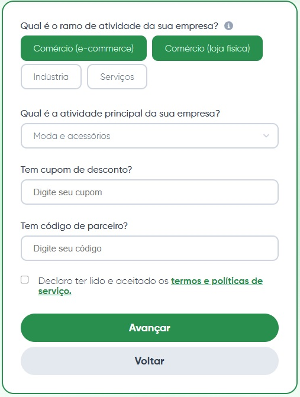 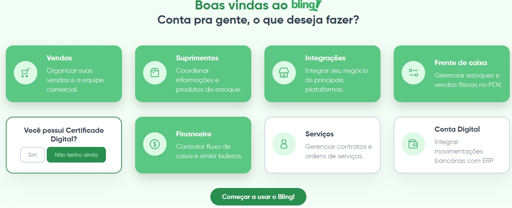
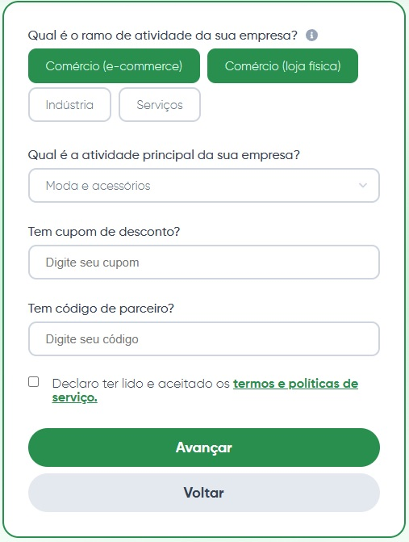 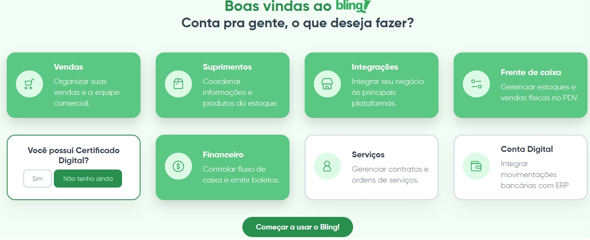 


 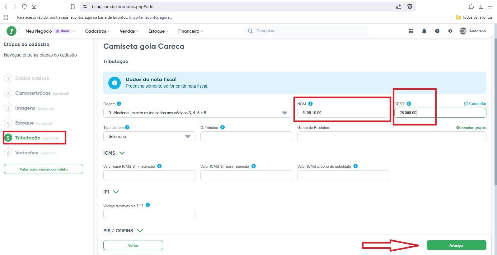
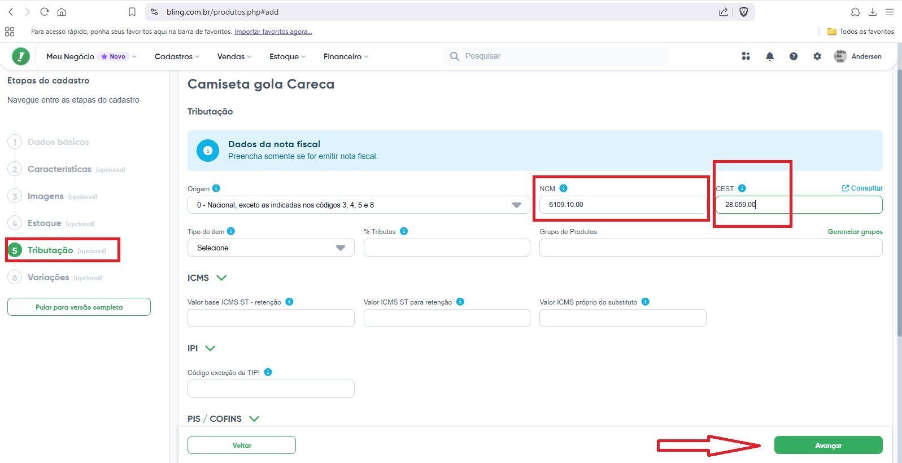 


 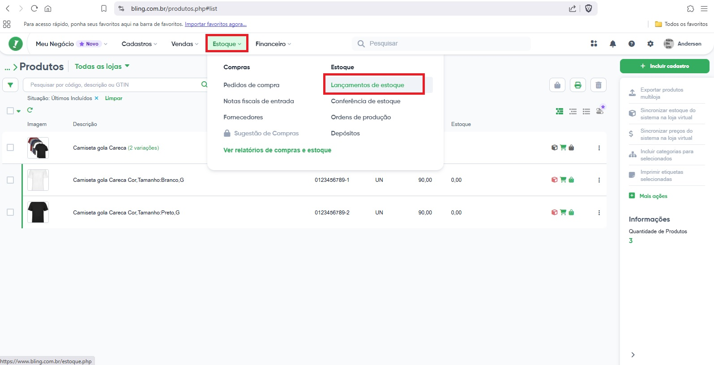
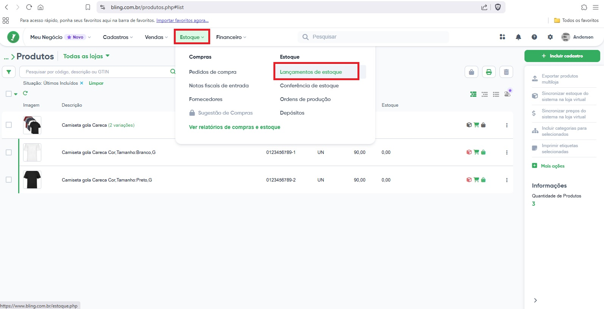 


 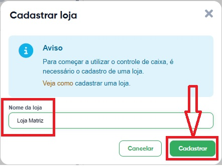
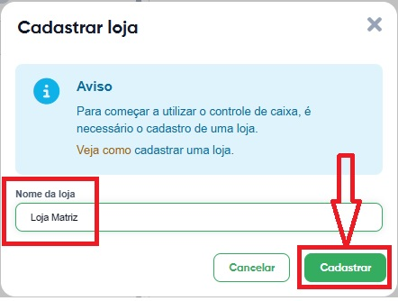  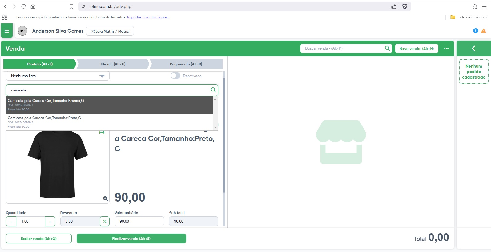
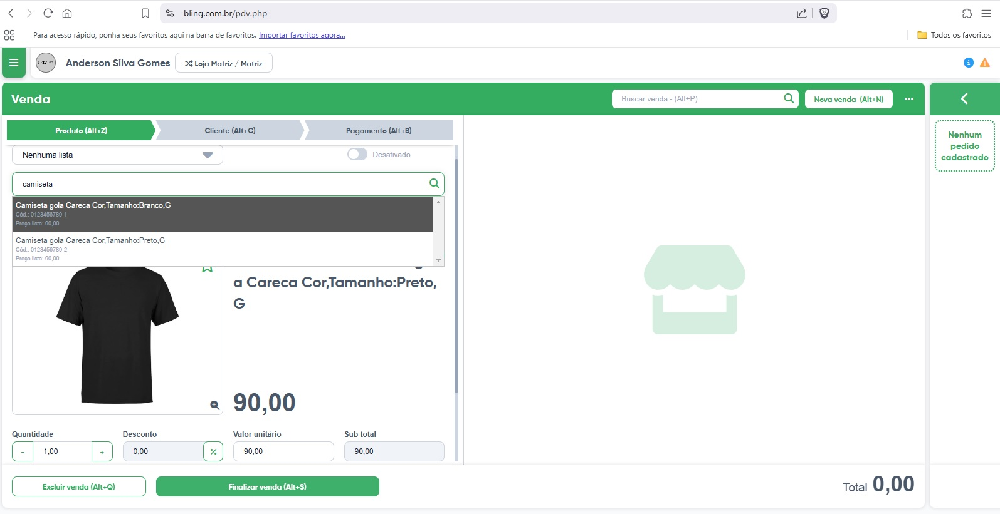


 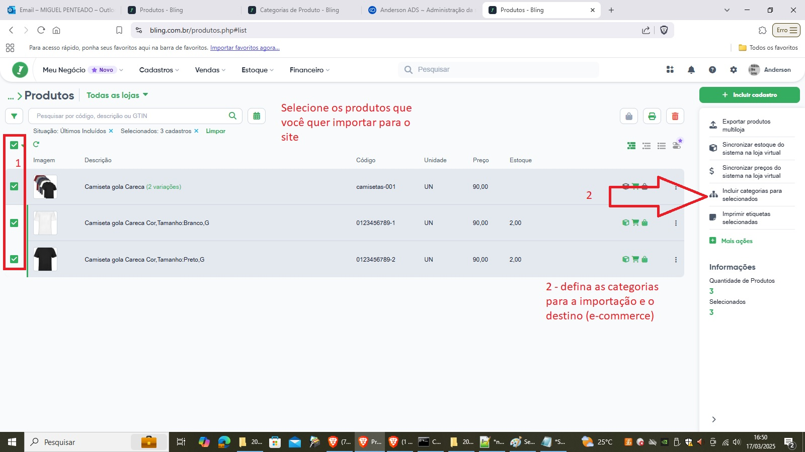
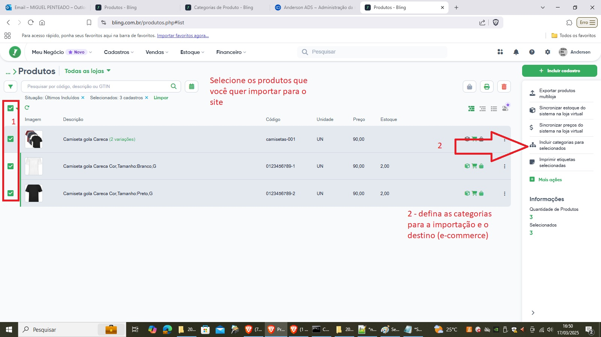 


2.6.5 INICIANDO O PROCESSO DE VENDA SIMULADA NO E-COMMERCE INTEGRADO AO ERP:
2.6.5.1 Configurar no e-commerce um ou mais MEIO(s) DE PAGAMENTO
No e-commerce (nuvemshop nesse caso) vá atá a aba de configuração.
Procure pelo menu “Meio de Pagamento”

Aqui temos várias opções disponíveis para o dinheiro vir do comprador até a empresa (seu cliente) dona do site de e-commerce:
Cartões de Débito ( Via “mercado pago”, “núvem pago”, “Cielo”, “Rede” etc )
Cartões de Crédito ( Via “mercado pago”, “núvem pago”, “Cielo”, “Rede” etc
Via boleto
Via PIX
(pesonalizado) Via troca de conversa whatsapp, onde manualmente o cliente termina a compra, pega a chave pix da loja virtual pelo whatsapp ou e-mail por exemplo, paga e envia o comprovante no whatsapp ou e-mail da loja virtual/e-commerce. Nessa modalidade, não há necessidade de se cadastrar em meios de pagamento, e portanto, não há cobrança de taxas pelos meios-de-pagamento. Utilizaremos esse método para nosso estudo de caso.
Localize o meio de pagamento personalizado

Ative esse tipo de meio-de-pagamento.

Ative apenas a opção “A combinar” (referente a fazer a conferência de pagamento manualmente).

Pronto. Apenas confirme que seu meio de pagamento está configurado e ativado.


2.6.5.3 Aprovação manual da compra
2.6.5.3.1 Cliente recebe status da compra (pedido e status de pagamento)
Neste ponto o comprador recebe um e-mail informando:
| Número do pedido | No caso esse número é o #100 |
| Status do pagamento | Informa que está aguardando pagamento |


2.6.5.3.4 parte 02 - Fechar venda no ERP ( dar baixa no estoque e lançamento de contas )
OBS: conforme combiando, por razões de limitações do estduo de caso, não vamos emitir nota fiscal para esta venda.
Acesse o módulo de vendas. Entre em pedidos de venda.

Veja qu o sistema já puxou a venda do e-commerce, mas pelo processo estar no “modo manual”, precisamos fazer o sistema:
| Ações manuais sobre a venda | Descrição e importância |
|---|---|
| 1- Atualizar o estoque | De 2 camisetas pretas existentes na loja, 1 foi vendida, portanto restando apenas 1 para vender |
| 2- Atualizar as contas | O valor da venda, sem o frente, foi de R$ 90,00. Portanto entrou R$ 90,00 nas contas a receber. |
| 3- Fechar a venda dentro do ERP | Regra de ERP: para pode emitir nota fiscal e mandar embalar a camiseta, é preciso fechar o pedido primeiro. |
Verifique o status atual da sua venda que foi recebida do e-commerce:
Atualize o estoque seguindo os passos abaixo:

Atualize as contas seguindo os passos abaixo:

Feche a venda seguindo os passos abaixo
Coloque uma observação (já que você fez o processo manualmente).

Pronto, agora é só verificar a sua venda finalizada.

Parabéns para você que chegou aqui!
Você implantou um e-commerce gerenciado por ERP para um cliente.
2.7 CASO DE SUCESSO NO BRASIL DE UMA STARTUP, NESSE CASO ESPECÍFICAMENTE, DE I.A.
2.7.1 Fundada por brasileiro, CrewAI capta R$ 100M e atrai CEO da OpenAI
A matéria completa está em https://startups.com.br/negocios/fundada-por-brasileiro-crewai-capta-r-100m-e-atrai-ceo-da-openai/
2.8 Lista de 100 Startups Brasileiras de Sucesso
| id | Nome | Área de Atuação |
|---|---|---|
| 1 | Nubank | Serviços financeiros digitais |
| 2 | iFood | Entrega de comida e mercado |
| 3 | QuintoAndar | Plataforma de aluguel e compra de imóveis |
| 4 | Loft | Compra e venda de imóveis |
| 5 | Creditas | Empréstimos com garantia |
| 6 | Gympass | Plataforma de bem-estar e atividades físicas |
| 7 | MadeiraMadeira | Venda online de móveis e artigos para casa |
| 8 | VTEX | Plataforma de comércio digital |
| 9 | CargoX | Plataforma de logística e transporte |
| 10 | Neon | Banco digital |
| 11 | EBANX | Processamento de pagamentos |
| 12 | Hotmart | Plataforma de produtos digitais |
| 13 | Loggi | Logística para e-commerce |
| 14 | Wildlife Studios | Desenvolvimento de jogos |
| 15 | Stone | Soluções de pagamento |
| 16 | RD Station | Automação de marketing e vendas |
| 17 | Conta Azul | Software de gestão para pequenas empresas |
| 18 | Descomplica | Educação online |
| 19 | Facily | E-commerce social |
| 20 | Olist | Plataforma para vendas online |
| 21 | Docket | Gestão de documentos |
| 22 | Alice | Plano de saúde |
| 23 | Daki | Supermercado online |
| 24 | Hashdex | Gestão de criptoativos |
| 25 | Kavak | Compra e venda de carros usados |
| 26 | unico | Identidade digital |
| 27 | Buser | Transporte rodoviário |
| 28 | Pagar.me | Soluções de pagamento online |
| 29 | Rappi | Entrega de diversos produtos |
| 30 | Zé Delivery | Entrega de bebidas |
| 31 | Petlove | Produtos e serviços para pets |
| 32 | Sami | Plano de saúde |
| 33 | Kovi | Aluguel de carros por assinatura |
| 34 | Warren | Plataforma de investimentos |
| 35 | Liv Up | Alimentação saudável |
| 36 | Trybe | Escola de programação |
| 37 | Amaro | E-commerce de moda |
| 38 | Cortex | Inteligência de dados |
| 39 | Infracommerce | Soluções para e-commerce |
| 40 | Gupy | Recrutamento e seleção |
| 41 | Flash Benefícios | Benefícios corporativos |
| 42 | Méliuz | Cashback e cupons |
| 43 | Omie | Software de gestão para PMEs |
| 44 | Dr. Consulta | Clínicas populares |
| 45 | Zenklub | Saúde mental |
| 46 | PicPay | Carteira digital |
| 47 | Creditas Auto | Empréstimos com garantia de veículo |
| 48 | 99 | Aplicativo de mobilidade urbana |
| 49 | C6 Bank | Banco digital |
| 50 | CloudWalk | Pagamentos digitais |
| 51 | Neon Pagamentos | Banco digital |
| 52 | Quero Educação | Educação |
| 53 | Loft | Plataforma de compra e venda de imóveis |
| 54 | Creditas | Plataforma de empréstimos online |
| 55 | Gympass | Plataforma de bem-estar corporativo |
| 56 | MadeiraMadeira | E-commerce de produtos para casa |
| 57 | VTEX | Plataforma de e-commerce |
| 58 | CargoX | Plataforma de transporte de cargas |
| 59 | Neon Pagamentos | Banco digital |
| 60 | EBANX | Processamento de pagamentos |
| 61 | Hotmart | Plataforma de produtos digitais |
| 62 | Loggi | Logística para e-commerce |
| 63 | Wildlife Studios | Desenvolvimento de jogos |
| 64 | Stone | Soluções de pagamento |
| 65 | RD Station | Plataforma de automação de marketing |
| 66 | Conta Azul | Software de gestão para pequenas empresas |
| 67 | Descomplica | Educação online |
| 68 | Facily | Plataforma de compras online |
| 69 | Olist | Plataforma de vendas online |
| 70 | Docket | Plataforma de gestão de documentos |
| 71 | Alice | Plano de saúde |
| 72 | Daki | Supermercado online |
| 73 | Hashdex | Gestão de criptoativos |
| 74 | Kavak | Compra e venda de carros usados |
| 75 | unico | Plataforma de identidade digital |
| 76 | Buser | Transporte rodoviário |
| 77 | Pagar.me | Soluções de pagamento online |
| 78 | Rappi | Aplicativo de entrega |
| 79 | Zé Delivery | Entrega de bebidas |
| 80 | Petlove | E-commerce de produtos para pets |
| 81 | Sami | Plano de saúde |
| 82 | Kovi | Aluguel de carros por assinatura |
| 83 | Warren | Plataforma de investimentos |
| 84 | Liv Up | Plataforma de alimentação saudável |
| 85 | Trybe | Escola de programação |
| 86 | Amaro | E-commerce de moda |
| 87 | Cortex | Plataforma de inteligência de dados |
| 88 | Infracommerce | Soluções para e-commerce |
| 89 | Gupy | Plataforma de recrutamento e seleção |
| 90 | Flash Benefícios | Plataforma de benefícios corporativos |
| 91 | Méliuz | Plataforma de cashback e cupons |
| 92 | Omie | Software de gestão para pequenas empresas |
| 93 | Dr. Consulta | Clínicas populares |
| 94 | Zenklub | Plataforma de saúde mental |
| 95 | PicPay | Carteira digital |
| 96 | Creditas Auto | Empréstimos com garantia de veículo |
| 97 | Neon Pagamentos | Banco digital |
| 98 | 99 | Aplicativo de mobilidade urbana |
| 99 | C6 Bank | Banco digital |
| 100 | CloudWalk | Pagamentos digitais |